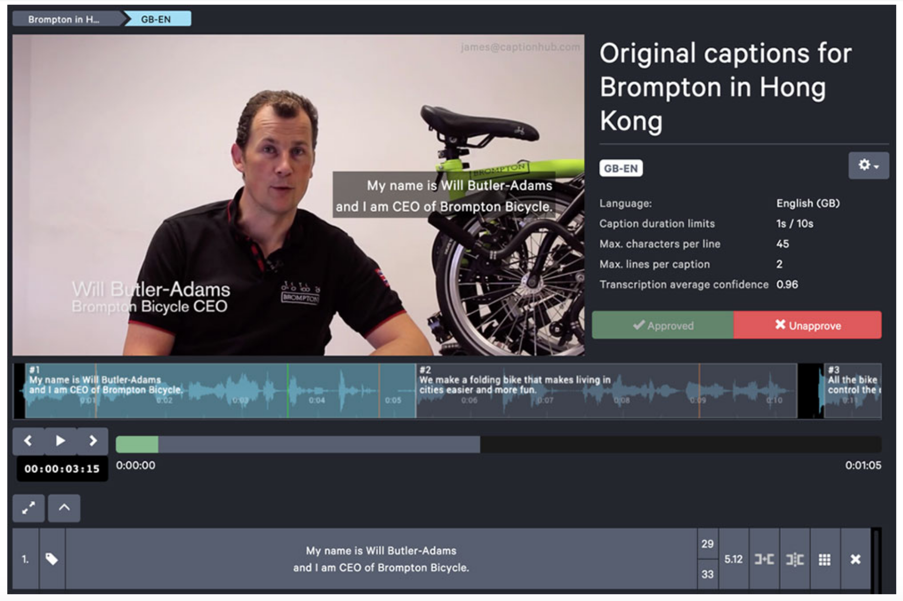

Intro to Amazon Transcribe, Translate, and Polly
New Sellers Workshop
Hello, AWS!
Agenda
AWS Overview
AWS Value Propostion
AWS Machine Learn Services
Demo
What is AWS?

Security
Flexibility
Elasticity
Cost
Agility
Amazon Transcribe
Subtitling videos accurately and easily with CaptionHub and AWS

¿Qué hora es?
Amazon Translate
Neural machine translation service
Affordable language translation
Highly accurate & continuously learning
Amazon Polly
Using AWS CLI
Upload Files to S3
aws s3 cp jassy-transcribe.mp4 s3://winston.cloud
Translate Text
aws translate translate-text --text Hello! --source-language-code en --target-language-code es --output table